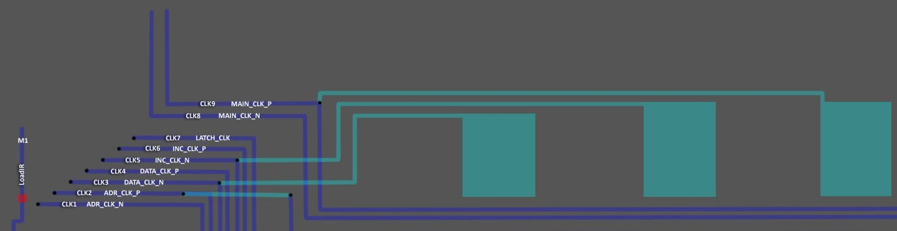
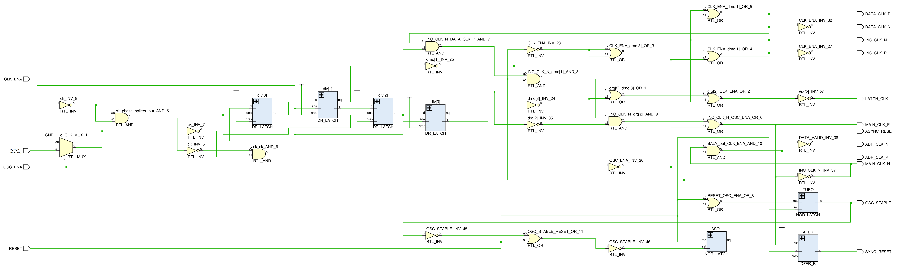
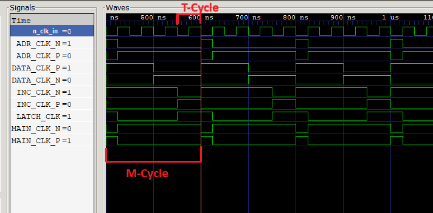
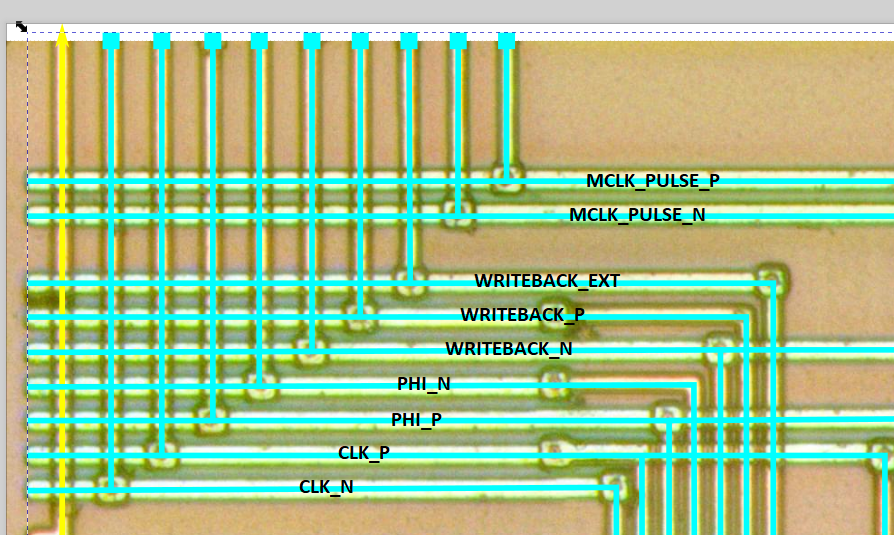

Clock Trees
The CPU receives 9 (!) CLK signals.

| CLK Signal | dmg-schematics Name | Gekkio |
|---|---|---|
| CLK1 | T2 / ADR_CLK_N | ~clk |
| CLK2 | T3 / ADR_CLK_P | clk |
| CLK3 | T4 / DATA_CLK_P | phi |
| CLK4 | T5 / DATA_CLK_N | ~phi |
| CLK5 | T6 / INC_CLK_N | ~writeback |
| CLK6 | T7 / INC_CLK_P | writeback |
| CLK7 | T8 / LATCH_CLK | writeback_ext; This CLK is used to maintain the overlapped instruction execution mechanism used in the SM83 and other vintage chips of that era |
| CLK8 | T9 / MAIN_CLK_N | ~mclk_pulse |
| CLK9 | T10 / MAIN_CLK_P | mclk_pulse |
All CLKs (except CLK7) use an approach called Dual Rails, where a single CLK is split into two complementary signals (or "phases"). One phase has a value of 1 when CLK=0 (and is called Clock Complement) and the other phase has a value of 1 when CLK=1 (same as CLK).
⚠️ To analyze the operation of an individual module, it is not particularly important in which polarity the CLK that is used there comes. It only becomes important when all the modules work together.
External CLK Circuit
Based on: https://github.com/msinger/dmg-schematics

Waves

Gekkio Waves

| CLK | Pattern |
|---|---|
| CLK1 / ADR_CLK_N / ~clk | 10000000 |
| CLK2 / ADR_CLK_P / clk | 01111111 |
| CLK3 / DATA_CLK_P / phi | 11110000 |
| CLK4 / DATA_CLK_N / ~phi | 00001111 |
| CLK5 / INC_CLK_N / ~writeback | 11111100 |
| CLK6 / INC_CLK_P / writeback | 00000011 |
| CLK7 / LATCH_CLK / writeback_ext | 10000011 |
| CLK8 / MAIN_CLK_N / ~mclk_pulse | 01111111 |
| CLK9 / MAIN_CLK_P / mclk_pulse | 10000000 |
Use of CLK7
This section is initiated by #274. You can use it as a reference to make sure that your SM83 implementation takes this CLK into account in all places.
List of places where CLK7 is used:
- In ALU to get updated value of flags (Z/N/H/C) and also for ALU_Out1 signal (aka SkipBranch)
- In the register block, for SPL/SPH, PCL/PCH registers